RM2019首战佛山！上百台机器人会师岭南，邀你观战！
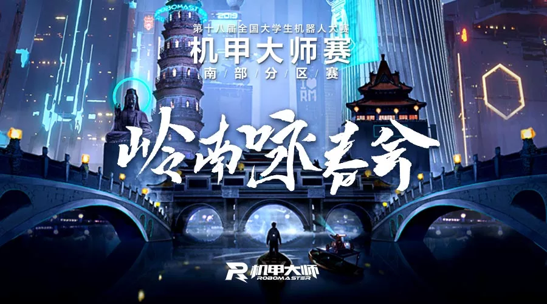
就在这周，RoboMaster 2019南部分区赛来到佛山，最刺激的机器人竞赛即将开战！
38所大学，上百台机器人整装待发，即将打响2019赛季第一炮！
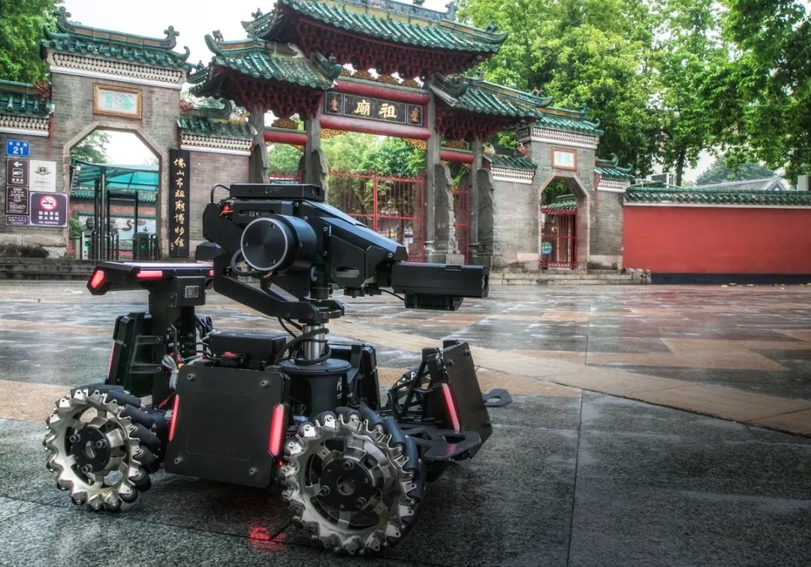
时间：5月16-19日
地点：佛山 · 岭南明珠体育馆
免费领票：扫码免费领取门票
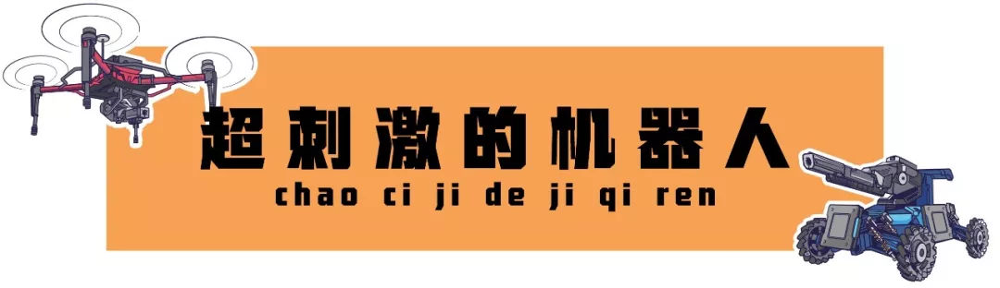
RoboMaster 2019机甲大师赛是一个享誉全球的机器人竞赛。
去年比赛一推出，就引来现场4万多人吃瓜观赛，更别说手机前上千万人守屏直播了。
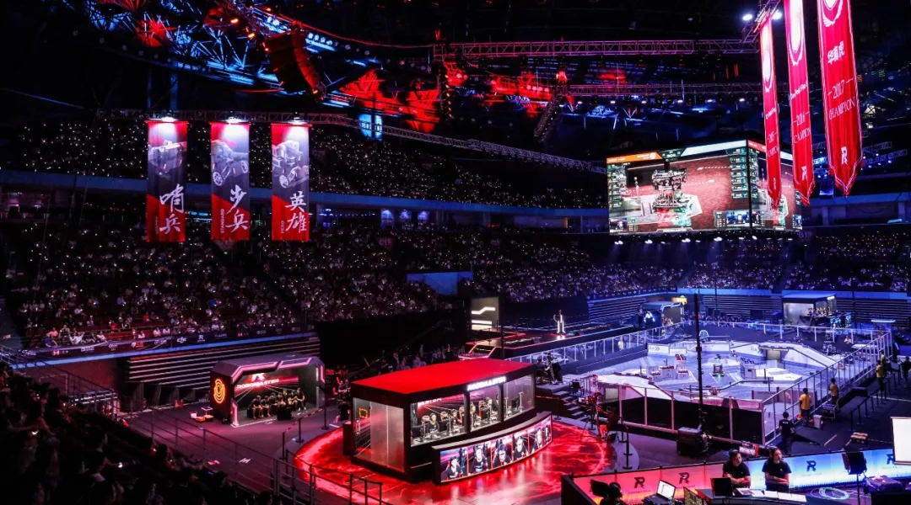
RoboMaster 2018总决赛现场
为什么大人小孩都爱看？因为比赛玩法太有意思了！
它堪称机器人版LOL。机器人分成红蓝双方，靠发射弹丸攻击对方，身上的血量被打光就算阵亡了。
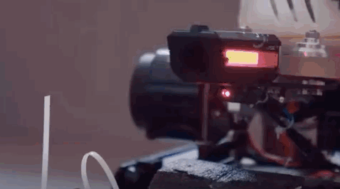
机器人发射弹丸激战
双方各有一个基地， 7分钟内谁能清空对方基地的血条，就算推塔成功。

机器人寻找敌人
更多赛场看点戳上期介绍：
今年的南部分区赛阵容厉害了，不仅战队数量最多，而且往年的总冠军全在这里汇合！
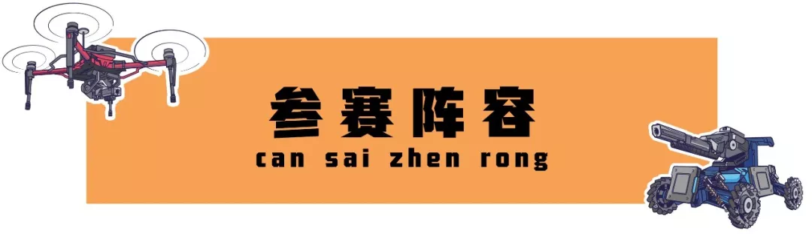
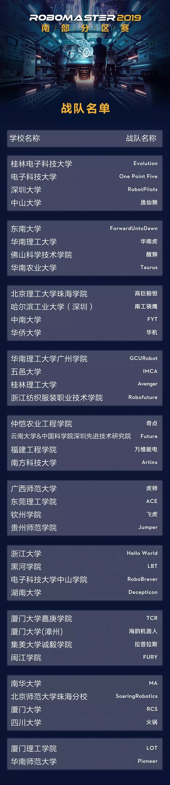
总决赛晋级名额：6名
复活赛名额：5名
人气战队复活名额：1名
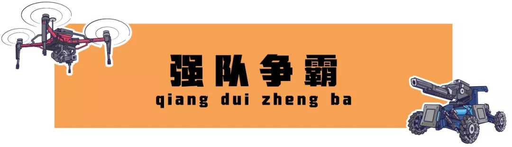
不知道为什么，登顶过总冠军的战队都往南部跑！
他们是华南理工大学和电子科技大学。
前者获得2017、2018赛季总冠军，后者夺得2015、2016赛季总冠军。
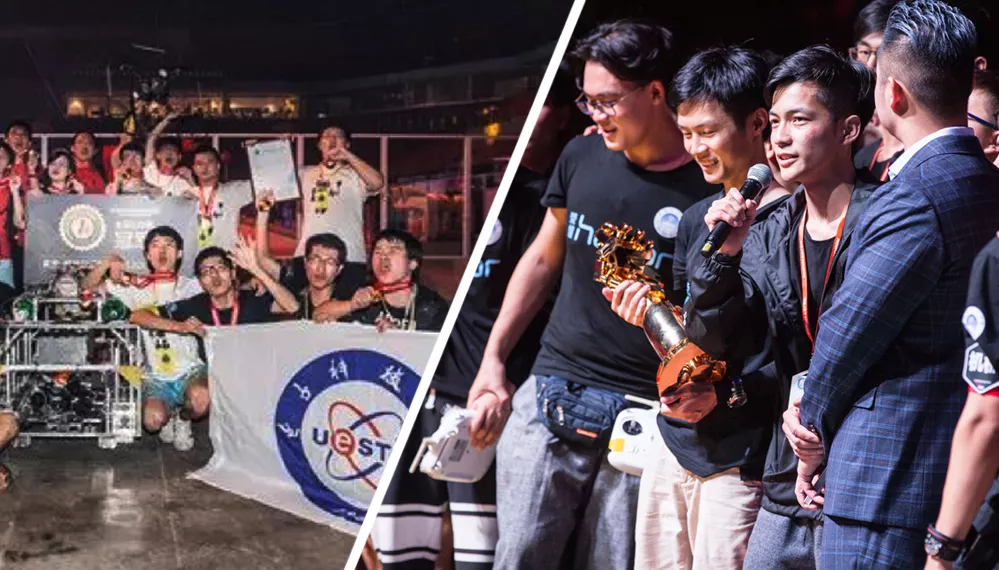
左边为电子科大，右边为华南理工
鹅妹子嘤！四年的总冠军都被他们承包了！
他们还被民间评选为RM五大美男之一，戳图片看👇
先说说华南理工，他们凭借难以挑剔的机器人，和超强的好胜心，从最初的16强一路杀到蝉联总冠军。
简直可以为他们颁发「最佳进步奖」。
去年，华工的英雄机器人最为瞩目：比赛打到一半，现场表演掉轮子……成为分区赛最大乌龙事件。
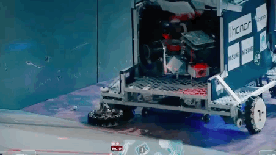
机器人掉轮子
说好的华南猛虎呢？队长感觉受到了奇耻大辱，勒令队员爆改机器人。
脱胎换骨后，他们最高一场击杀了敌方英雄6次！创造了最高击杀英雄次数。
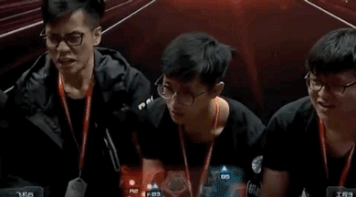
华工获得总冠军后呐喊
而胜利的秘密武器就是自动识别系统。
机器人可以自动瞄准敌人，在他们视线内的敌人，都难逃魔掌，一发必中！
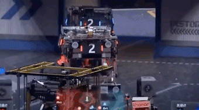
红方英雄追击并击杀敌人
是当之无愧的人工智能玩家。今年他们能否保持成绩，再现雄风？
再说说电子科大，他们向来低调，夺得RM2016首届总冠军后，又成功卫冕第二届总冠军。
因此被大家称为「西南大魔王」。
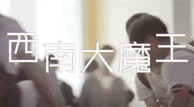
电子科大宣传片
即使两年过去了，战队们依然闻电科丧胆。
说是打赢电科=登上人生巅峰=回学校吹一年。
去年，他们将工程机器人的作用发挥得淋漓尽致，曾一场就活英雄机器人4次！（没错，就是楼上杀的）
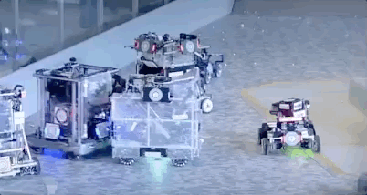
工程机器人救援
靠这强大的机器人性能，他们夺得了2018分区赛冠军，也让大家相信，大魔王重新回来了！
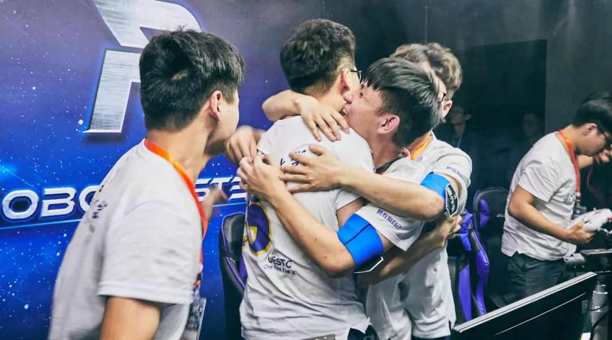
电子科大获得2018分区赛冠军
电子科大的机械设计一直是强项，从2016年的暴力取弹机构，到抬升机构登岛，他们的机械一直被模仿。
去年的取弹机构一亮相，简直让人拍大腿感叹：我咋没想到呢？
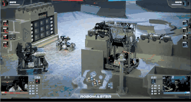
机器人吞噬弹药箱
而在分区赛夺得冠军后，电子科大却在总决赛栽了跟头，止步八强。
今年他们能否重振当年英勇？我们拭目以待！
当然，其他队伍也不容小觑，38支战队争夺6个总决赛名额，简直不要太激烈！
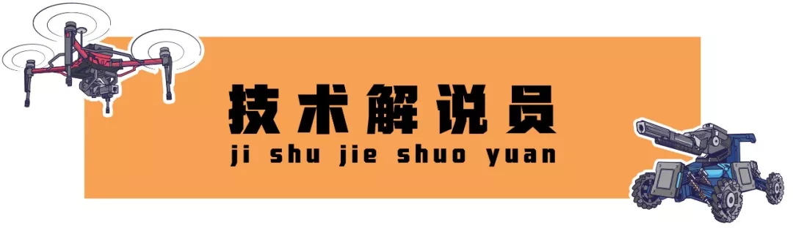
每年的MC阵容是小R第二期待的大事了！今年南部请来了各战队的明星人物空降赛场。
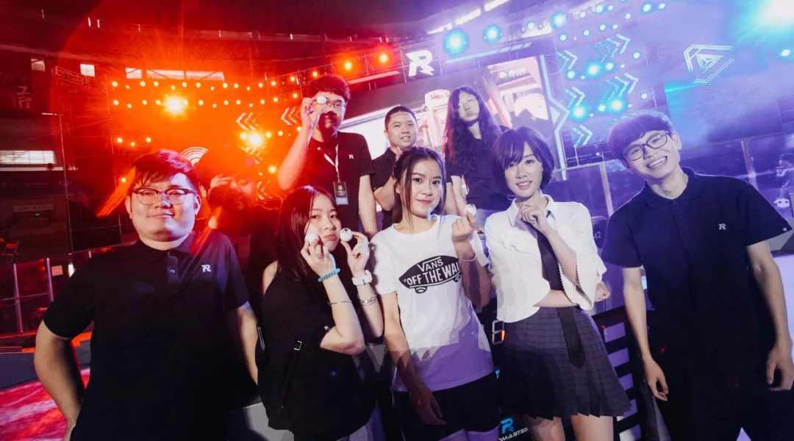
2018分区赛解说阵容
其中有卫冕2016总冠军的电子科大队长，俊儒。
还记得去年，他作为讲解员解读机器人技术，赢得不少大小朋友的喜爱。
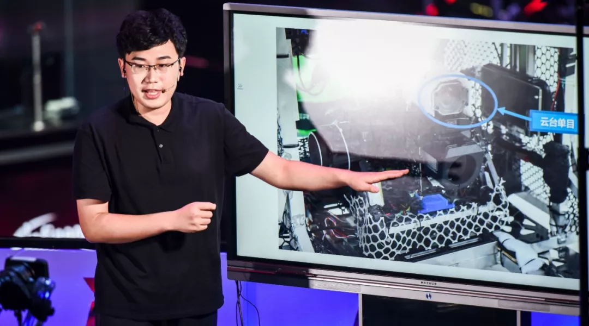
俊儒讲解机器人知识
还有真人秀《超能理工派》的成员到场，满满的综艺感快溢出屏幕了！
你Pick哪个小哥哥？小R这就给你请来啦。
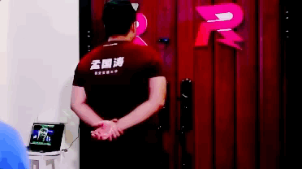
真人秀里展示人脸识别开门
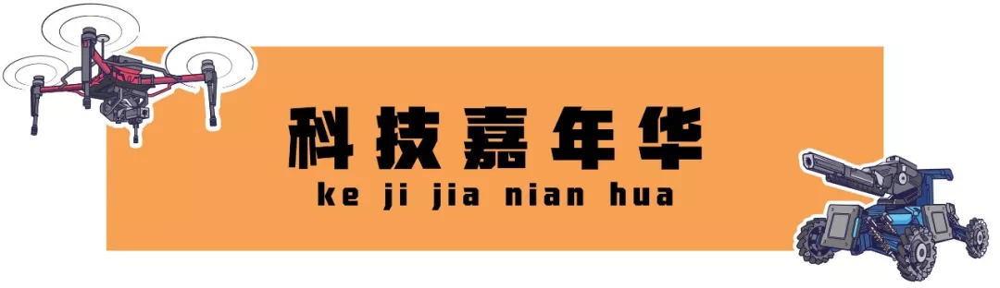
光看比赛不过瘾？场外嘉年华还有机器人游戏，让你早十年接触黑科技！
操控机器人在跑道飞驰，亲手体会赛场选手的速度和激情。
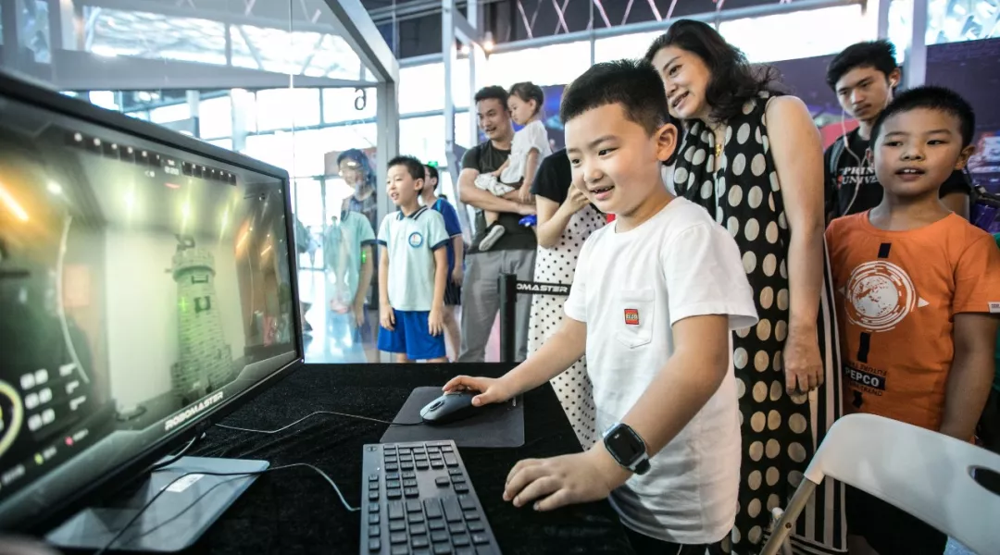
2018总决赛嘉年华
游戏之余，还有丰富的RM周边免费派送！试问还有哪个比赛这么贴心和慷慨！？
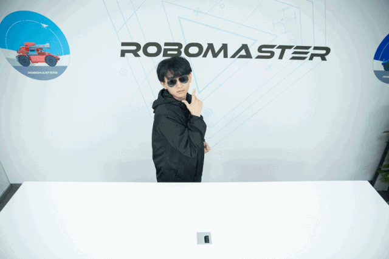
RM周边大礼包
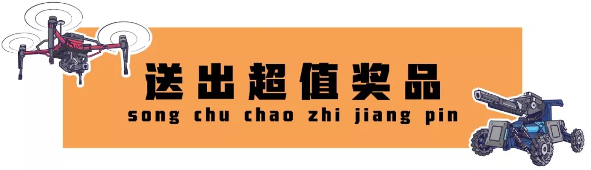
如果来不了现场，还有线上抽奖活动让你分分钟抱走大奖。
为你喜爱的战队投票，就有机会赢走OSMO Pocket手持相机、无人机、周边礼包等奖品。
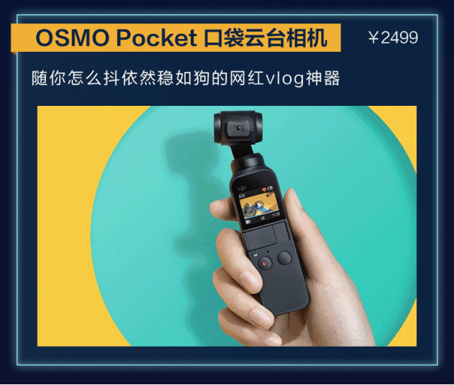
超多高价值奖品
活动将于本周上线，届时可在公众号后台回复「人气投票」参与。
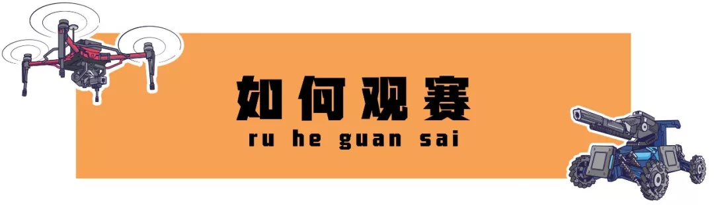
免费领票
等待已久，RoboMaster 2019终于要开始了！
分区赛首战佛山，我们等你来观赛！
━━━━━
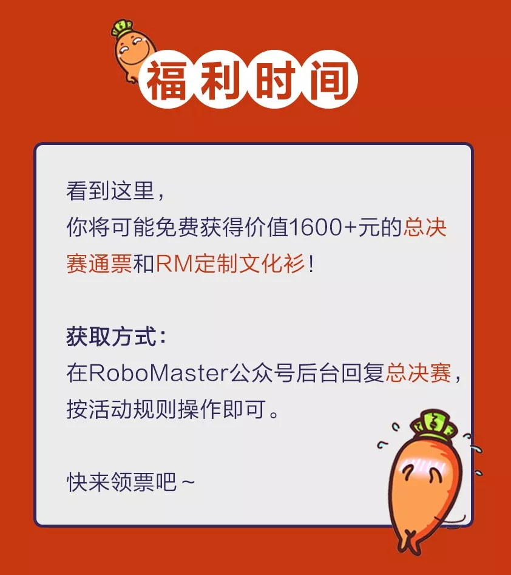
策划：萝马编辑部
编辑、撰文：Y+Y


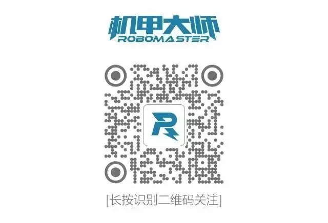
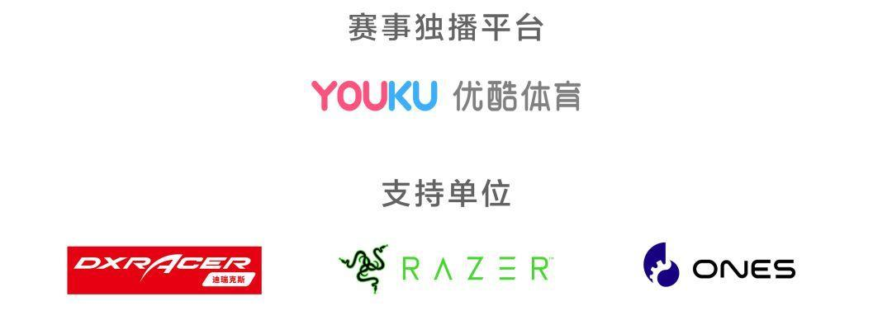